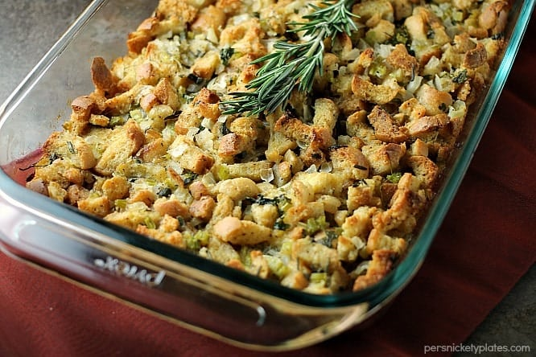

Delicious Traditional Recipes for family and friends
A big part of Thanksgiving is having a feast with family and friends and many delicious foods are served, like Mashpotatos, Ham, Turkey, Mac & Cheese, and many more delicious foods
Mac & Cheese is a big thanksgiving food and there are mnany differnt kinds and styles of it that familys eat.
Ingredients
For the pasta:
1 lb (16 oz) elbow macaroni
For the cheese sauce:
4 tbsp butter
4 tbsp all-purpose flour
3 cups milk (whole milk works best)
2 cups shredded sharp cheddar cheese
1 cup shredded mozzarella (optional but melty!)
1/2 tsp salt
1/2 tsp black pepper
1/2 tsp garlic powder (optional)
1/4 tsp paprika (optional)
Optional topping (for baked version):
1 cup breadcrumbs
2 tbsp melted butter
Extra shredded cheese
Instructions
1. Cook the pasta
Bring a large pot of salted water to a boil.
Add the macaroni and cook until al dente (usually 7–8 minutes).
Drain and set aside.
2. Make the cheese sauce
In a large pot, melt 4 tbsp butter over medium heat.
Add 4 tbsp flour and whisk for 1 minute to form a roux.
Slowly pour in the 3 cups milk, whisking constantly until smooth.
Cook for 3–5 minutes until it thickens.
Add the cheeses:
2 cups cheddar
1 cup mozzarella
Season with salt, pepper, garlic powder, and paprika.
Stir until melted and smooth.
3. Combine
Add the cooked macaroni into the cheese sauce and mix to coat evenly.
4. (Optional) Bake it
Preheat oven to 350°F (175°C).
Pour mac and cheese into a baking dish.
Mix breadcrumbs + 2 tbsp melted butter, sprinkle on top.
Add extra cheese if you want it extra cheesy.
Bake for 20–25 minutes until golden and bubbly.

Classic Stuffing Recipe
Perfect for Thanksgiving and other holiday meals
Ingredients
1 loaf of bread (preferably a day or two old), cubed
1/2 cup unsalted butter
1 medium onion, diced
2 stalks celery, chopped
3 cloves garlic, minced
1 1/2 cups chicken or vegetable broth
1 tsp dried thyme
1 tsp dried sage
1/2 tsp salt
1/4 tsp black pepper
1/2 cup chopped fresh parsley
1 egg (optional, for binding)
Instructions
Preheat your oven to 350°F (175°C).
In a large pan, melt the butter over medium heat. Add the diced onion and chopped celery, sautéing until softened (about 5 minutes).
Add the minced garlic, thyme, sage, salt, and pepper to the pan, and cook for another 1-2 minutes until fragrant.
In a large bowl, combine the cubed bread, the sautéed vegetable mixture, and the chopped parsley. Toss everything together.
Slowly pour in the chicken or vegetable broth, stirring to combine. The bread should absorb the liquid but remain slightly dry—add more broth if needed to reach your desired consistency.
If using, beat the egg and stir it into the mixture to help bind the stuffing together.
Transfer the stuffing mixture to a greased baking dish. Cover with foil and bake for 30 minutes.
After 30 minutes, remove the foil and bake for another 10-15 minutes until the top is golden brown and crispy.